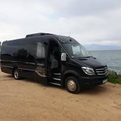
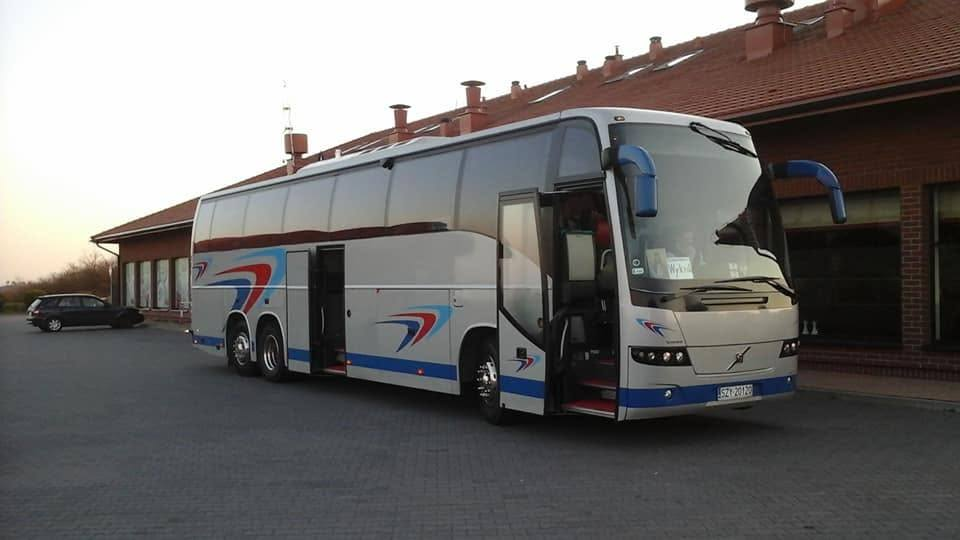
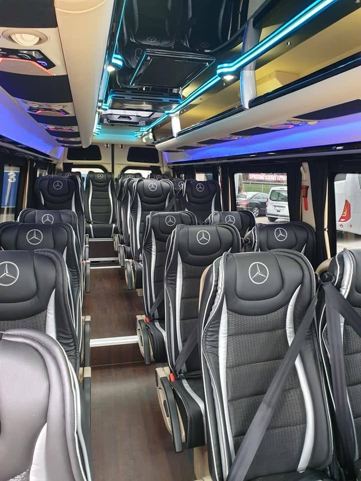
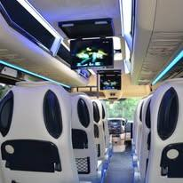

Małe grupy
Bus i mikrobus
Wyjazdy do kilkunastu–dwudziestu osób: delegacje, transfery lotniskowe, wycieczki szkolne i wyjazdy prywatne. W ofercie również wypożyczalnia busów.

Zaufanie wymagających klientów od 2006 roku
Przewóz osób autokarem, busem i mikrobusem — w Polsce i na terenie całej Europy. Bezpiecznie, punktualnie i z niezmiennie wysoką jakością usług, którą wymagający klienci doceniają od 2006 roku.
O nas
EURO-PARTNER Tomasz Kozieł to samodzielna firma transportowa o ugruntowanej pozycji na rynku, działająca nieprzerwanie od 2006 roku. Od pierwszego dnia naszym priorytetem jest niezmiennie wysoka jakość usług, pełen profesjonalizm i indywidualne podejście do każdego zlecenia.
Dzięki konsekwentnej dbałości o jakość i obsłudze klienta na najwyższym poziomie od lat cieszymy się zaufaniem wymagających klientów — regularnie do nas wracają i polecają nas jako przewoźnika niezawodnego i sprawdzonego.
Naszą ofertę kierujemy zarówno do mikro i makro przedsiębiorstw, instytucji, biur podróży, jak i klientów indywidualnych. Do każdej współpracy podchodzimy indywidualnie, a jakość świadczonych usług nieustannie podnosimy dzięki regularnym inwestycjom we flotę pojazdów.

Nasze usługi
Komfortowy i bezpieczny przewóz osób autokarem, busem oraz mikrobusem — na trasach krajowych i na terenie całej Europy.

Małe grupy
Wyjazdy do kilkunastu–dwudziestu osób: delegacje, transfery lotniskowe, wycieczki szkolne i wyjazdy prywatne. W ofercie również wypożyczalnia busów.
Duże grupy
Przewozy dla pełnych grup — biura podróży, firmy, instytucje, kluby sportowe i grupy pielgrzymkowe. Klimatyzacja, przestronny bagażnik, doświadczeni kierowcy.

Kraj i Europa
Posiadamy odpowiednie uprawnienia do wykonywania międzynarodowego transportu osób. Realizujemy trasy na terenie całej Europy, elastycznie dobierając terminy i przebieg podróży.
Nowoczesna flota
Wygodne, klimatyzowane wnętrza i regularne inwestycje w nowe pojazdy — komfort podróży na poziomie, jakiego oczekują wymagający klienci. Każdy autokar i bus przechodzi regularne przeglądy techniczne, a za kierownicą siadają wyłącznie doświadczeni kierowcy.
Dlaczego my
Ugruntowana pozycja na rynku transportowym.
Regularne inwestycje w nowe pojazdy.
Do każdego klienta i każdego zlecenia.
Przewozy osób w kraju i na terenie całej Europy — elastyczność tras i terminów.
Przejrzyste warunki i rzetelna wycena.
Gwarantujemy najwyższą jakość usług oraz uczciwe i profesjonalne podejście na każdym etapie realizacji zlecenia. Chętnie udzielimy dodatkowych informacji i przygotujemy indywidualną wycenę dla Państwa potrzeb.
Skontaktuj się z nami